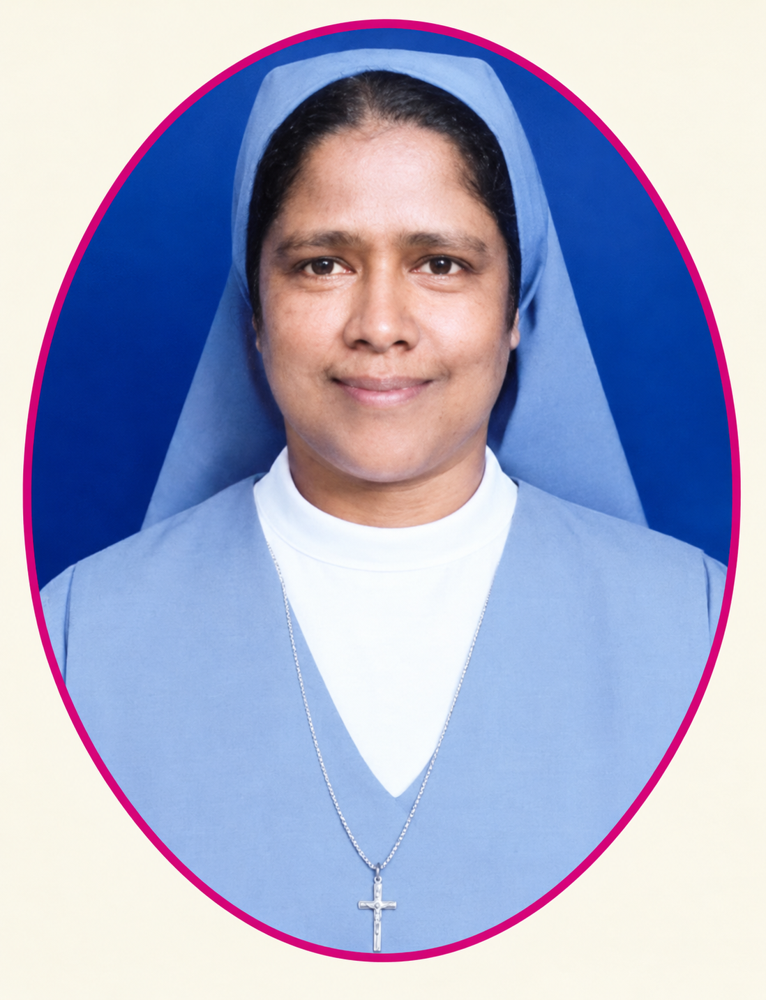
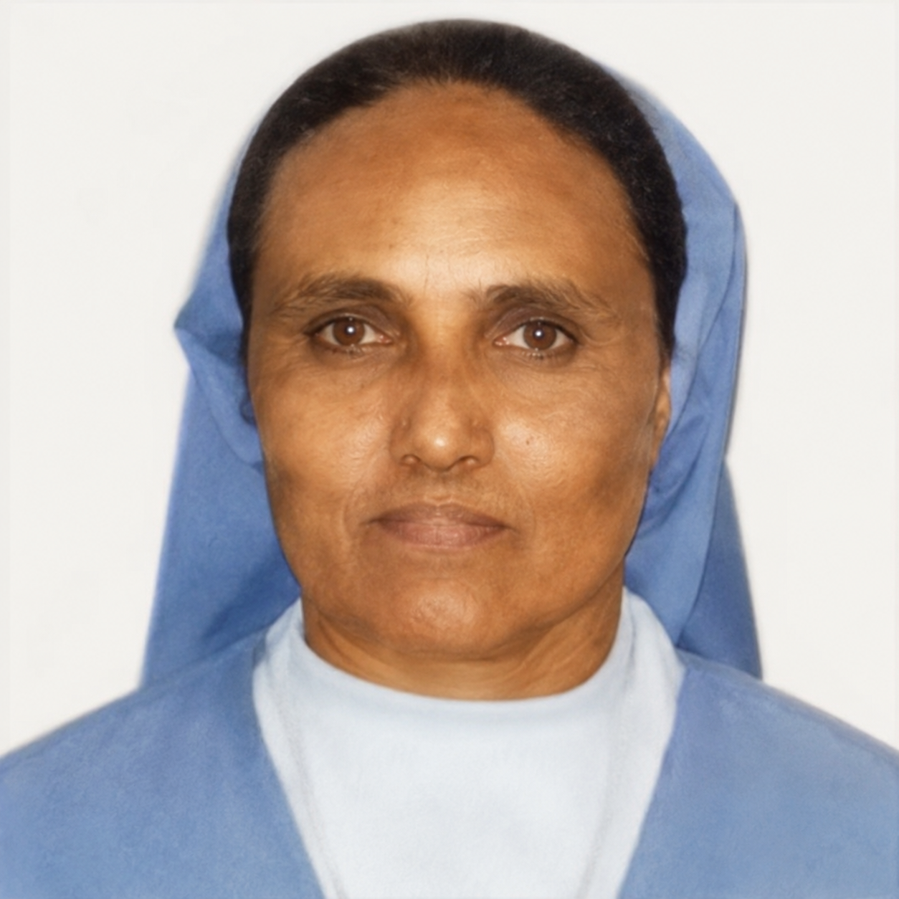

IN LOVING MEMORY
In Loving Memory
“Their lives continue to inspire us in faith, service and love.”
Our Beloved Sisters
Their dedication, faith and untiring service remain a living legacy in our congregation and in the lives of the people we serve.
